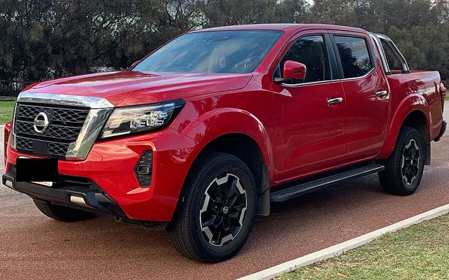

Par Motor › Precios por modelo › Nissan Navara
Precio de segunda mano · noviembre de 2026¿Cuánto vale un Nissan Navara de segunda mano?

Precio justo estimado de un Nissan Navara usado en España, año por año, con los kilómetros normales para su edad y en buen estado: de 7.000 € a 22.600 €. Para tasar el tuyo con sus kilómetros reales y su estado, usa el tasador gratis.
Precios del Nissan Navara por año
Navara D40 (2005–2015)
Precio de nuevo: 2.5 dCi 174 CV, 29.000 € · 2.5 dCi 190 CV, 32.000 € · 3.0 V6 dCi 231 CV, 40.000 €
| Año | Km normales | 2.5 dCi 174 CV · Diésel | 2.5 dCi 190 CV · Diésel | 3.0 V6 dCi 231 CV · Diésel |
|---|---|---|---|---|
| 2015 | 100.000 km | 14.100 € | 15.500 € | 19.400 € |
| 2014 | 100.000 km | 13.100 € | 14.500 € | 18.100 € |
| 2013 | 100.000 km | 12.300 € | 13.500 € | 16.900 € |
| 2012 | 100.000 km | 11.400 € | 12.600 € | 15.800 € |
| 2011 | 100.000 km | 10.700 € | 11.800 € | 14.700 € |
| 2010 | 100.000 km | 9.900 € | 11.000 € | 13.700 € |
| 2009 | 100.000 km | 9.300 € | 10.200 € | 12.800 € |
| 2008 | 100.000 km | 8.700 € | 9.500 € | 11.900 € |
| 2007 | 100.000 km | 8.100 € | 8.900 € | 11.100 € |
| 2006 | 100.000 km | 7.500 € | 8.300 € | 10.400 € |
| 2005 | 100.000 km | 7.000 € | 7.700 € | 9.700 € |
Navara D23 (2015–2022)
Precio de nuevo: 2.3 dCi 160 CV, 32.000 € · 2.3 dCi 190 CV, 36.000 €
| Año | Km normales | 2.3 dCi 160 CV · Diésel | 2.3 dCi 190 CV · Diésel |
|---|---|---|---|
| 2022 | 90.000 km | 20.100 € | 22.600 € |
| 2021 | 100.000 km | 18.500 € | 20.800 € |
| 2020 | 100.000 km | 18.400 € | 20.700 € |
| 2019 | 100.000 km | 18.300 € | 20.500 € |
| 2018 | 100.000 km | 18.000 € | 20.300 € |
| 2017 | 100.000 km | 17.700 € | 20.000 € |
| 2016 | 100.000 km | 16.700 € | 18.700 € |
| 2015 | 100.000 km | 15.500 € | 17.500 € |
Kilómetros normales: 15.000 al año en gasolina, híbridos y eléctricos, y 20.000 en diésel, con un máximo de 100.000 km (por encima no tasamos: el precio depende demasiado del historial de cada coche). Cifras redondeadas a 100 €.
Preguntas frecuentes
¿Cuánto vale un Nissan Navara de segunda mano?
Según el año, la versión y los kilómetros, un Nissan Navara usado vale hoy de 7.000 € a 22.600 € en España. El más barato de nuestra tabla es un 2.5 dCi de 2005 (7.000 €) y el más caro un 2.3 dCi de 2022 (22.600 €). Son precios justos estimados entre particulares y profesionales, con los kilómetros normales para su edad y en buen estado.
¿Cuánto valor pierde un Nissan Navara al año?
Con unos años encima, un Nissan Navara pierde alrededor de un 1 % de su valor cada año (calculado sobre el 2.3 dCi de la generación Navara D23). Los primeros años la caída es mayor y a partir de los 70.000 km se acelera.
¿Qué motorizaciones tiene el Nissan Navara?
En nuestra base de datos hay versiones diésel, en 2 generaciónes: Navara D40 y Navara D23.
¿Cómo sé si me piden demasiado por un Nissan Navara?
Abre el tasador de Par Motor, elige el Nissan Navara, el año y los kilómetros reales, y escribe lo que te piden. Te diremos si está por debajo del precio justo (chollo) o por encima (caro). Es gratis y no pide registro ni matrícula.
Otros Nissan
Compara su coste real
El precio de compra es solo una parte. Mira cuánto te costaría al mes con combustible, seguro, neumáticos, mantenimiento y lo que pierde de valor.
Abrir el comparador →